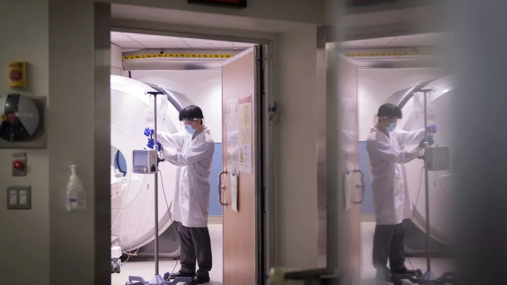

SCIENCE
New method delivers life-saving drugs to the brain-using sound...
Subscribe for full access to read stories from National Geographic
New method delivers life-saving drugs to the brain-using sound...
The victorius origins of Cinco de Mayo
Fruits and vegetables are less nutritious than they
Vaquita porpoises may still recover if illegal fishing ends
4 eco-friendly ways to keep pests out of your yard
How this feline became the biggest comeback in cat
This American's Supreme Court flight defined U.S.

To see Saudi Arabia, start with this 'magical' gateway
Forests as 'carbon offsets'? Climate change has other